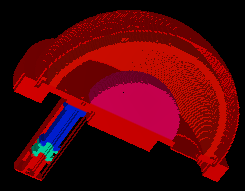
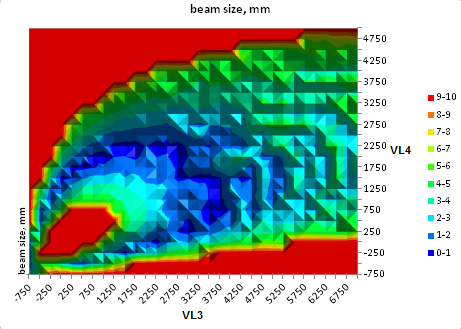

Purpose
This demonstrates a practical hemispherical deflectional analyzer (HDA). It includes routines for automating many runs under various combinations of two adjustable voltages in order to determine the optimal values of those voltages. Results are plotted in graphically (via plotlib in Example(plot)) and optimization is done by a (two variable) simplex optimization routine.

Figure: 3D view of HDA with entrance lens optics.

Figure: Heat map surface plot of beam size (mm) v.s. voltages VL3 and VL4, in r0_82f1_1000.iob.
Files in this folder
- README.txt - this file
- lens.gem - GEM file included by R0_82.gem to model the entrance lens.
- R0_82.gem - GEM file used to create R0_82.PA#
- R0_82.pa# - HDA potential array used by workbench IOB files.
- r0_82f1_1000.iob - workbench 1 (decel factor of 1)
- r0_82f4_1000.iob - workbench 2 (decel factor of 4)
- r0_82f1_1000.fly, r0_82f4_1000.fly - particle definitions for each iob file respectively
- r0_82f1_1000.lua - Lua workbench user program for plotting and optimizing metric for many combinations of adjustable voltages
- r0_82f4_1000.lua - same but for second IOB file.
About the Model
The model is of a full HDA (r0_82.gem) with 5 element lens (lens.gem) with paracentric entry at R0=82. R1 and R2 are near the real ones. Note to actually simulate the standard HDA of IJMS, we would need to define R1 and R2 according to that paper. The original model is older (from 1998) when I didn't know as much as I do today -- they would have to be updated in a future version of this example. T. Zouros 27/4/2007
Electrode numbering is as follows:
HDA: e1 is Vp (exit side of lens - this is the one where the deceleration or acceleration voltage goes) e2 is VL2 (is presently set at the same voltage at VL1 so lens is 4-element) e3 is VL3 (lens voltage, varied in this example) e4 is VL4 (lens voltage, varied in this example) e5 is VL5 (particle entry side of lens normally at same potential as source) e5 is V1 (inner HDA hemisphere) e6 is V2 (outer HDA hemisphere)
F1 decel factor 1, i.e. no decel this means that Vp=0 for KE=1000 eV so that W=w=1000eV (tuning energies) F4 decel factor 4, i.e. for KE=W=1000eV, w=W/4=250 so Vp=-750V=w-W=W/F-W=W(1-F)/F
Lens voltages are different for different decel factors. Equations follow notation of Zouros JESRP2002 paper and also IJMS 2007 paper.
Fly has 11 electrons flying from a point source at a well defined starting point with KE=1000eV and directed into the lens entry aperture (VL5). Lens and HDA for F=1 or F=4 IOB are set at the optimal voltages so that pencil beam is focused and passes through HDA finally plating on PSD.
The goal of the simplex implementation would be to find the lens voltages VL3 and VL4 for fixed VL5=0 and VL1=VL2=Vp for user defined F for particles of energy KE=W. Hopefully for F=1 and F=4 simplex would come near existing voltages.
Note: W (big W) is the undecelerated tuning energy (central ray energy). w (small w) is the decelerated tuning energy W/F and would be the central ray tuning energy inside the HDA.
Improved accuracy may be obtained by increasing the grid density and/or by splitting the system into two PAs with more symmetry (e.g. the lens and HDA regions) if we properly handle the boundary conditions at the hole that separates the two regions.
About the User Program
The user program r0_82f1_1000.lua causes trajectories to be rerun for a large number of combinations of lens voltages VL3 and VL4 in order to determine the optimal combination of these voltages.
The example can be operated in either of two modes: "plot" or "optimize".
In "plot" mode, the program generates in graphical surface plot of beam size as a function of the two adjustable lens voltages voltages, VL3 and VL4. This gives a global picture of where the local and absolute minima of beam size are. A plot of transmission (hit count on the detector) is also generated separately.
In "optimize" mode, the program searches for a local minimum (of beam size) starting at the currently adjusted values of voltages of VL3 and VL4. It uses a simplex optimization routine. If your system has multiple local minima (as is the case here as determined by running "plot"), it's important to start VL3 and VL4 somewhat near where you're searching so that the optimizer moves toward the correct local minimum. Because of the roughness of the function being optimized in the current version of this example, the simplex optimization might not work that well.
See the comments in the Lua program for further details.
Optimization Criteria
The optimization routine adjusts the input variables (VL3 and VL4 here) in order to minimize some user-defined metric. In the current program, the metric is defined simply as the beam size, particularly the difference between the maximum and minimum values of x where the particles splat. This metric is further set to a high value if there is not 100% transmission. As shown in the plot, there are many local minimums, and the optimization routine can move toward any one of those values. A future version of this example may alter the metric to constrain the optimization further.
Usage
Using plot mode.
- 1. View r0_82f1_1000.iob. (Click View on main screen and select the drag.iob file.)
- 2. If this is your first time using the example, you will be asked to build/refine (confirm that and press Refine).
- 3. Set trajectory quality to zero. (Optionally set TQual in Particles tab to 0.) This improves speed.
- 4. Fly ions with Grouped disabled. (Ensure Grouped is unchecked in Particles tab and then click Fly'm.) A plot will display (in your graphical plotting program, such as Excel) of the metric (beam size) v.s. various values of the two adjusted lens voltages. A econd graph is also created containing hit counts on the detector v.s. these two lens voltages (if Excel is used, this will be in the "Chart2" worksheet).
Using optimize mode.
- 5. Switch to "optimize" mode by entering
mode = "optimize" in the command bar at the bottom of the SIMION window (the default was mode was "plot"). - 6. Open the Log display in a separate window. (In the Log tab, click "W".)
- 7. Set the voltages you want to start searching at.
(In the Variables tab, set the
_opt_VL3_startand_opt_VL4_startvariables. (You may use the default values for now.)) - 8. Optionally change the initial simplex optimizer
step sizes
_opt_VL3_stepand_opt_VL4_stepin the Variables tab. This controls how agressive the optimizer initially moves (change in volts on first iteration) in each input variable (VL3 and VL4). - 9. Click Fly'm. SIMION will do many runs under various combinations of the two voltages. For each iteration, the input voltages and the resultant metric will display in the log for each run. Notice that voltages converge to some value that generally minimizes the metric. You may stop the simulation (unpress Fly'm) when you are satisfied with the convergence if it does not stop itself.
- 10. Optionally, repeat steps 7-9 using different initial voltages or step sizes.
Using r0_82f4_1000.iob.
- 11. An alternate IOB file r0_82f4_1000.iob (with decel factor 4 rather than 1) can also be run.
See Also
- Doc: HDA - notes on HDA's (includes links to papers)
- Example: Surface Enhancement contains an example of a spherical capacitor (used as an HDA) refined with the SIMION 8.1.1 surface enhancement feature, which greatly improves Refine accuracy. This feature helps when electrode surfaces don't perfectly align to grid points, as is usually the case with curved surfaces like HDA's.
- Example: Tune
- Example: plot - details on the plotting library used in this example.
History/Changes
- 2012-08-17: Use flym (and load) segment to simplify code, and remove empty.pa. Extract surface plotting into external excellib library. Support gnuplot (in additional to excel) via plotlib. Support plotting 1D (not just 2D) scans. Fix sometimes reversal of surface plot labels depending on voltage scan ranges. Scan in a more incremental way, showing rough before detailed picture. Add tranmission plot (in additional to beam size plot). Allow disabling plotting (_use_plot variable). Change adjustable variable names. Enable surface enhancement in GEM file.
- The GEM file and HDA main model is (c) 1998-2007 Theo Zouros and distributed by permission under the terms of SIMION 8. Lua program and additional docs by D.Manura--200704.